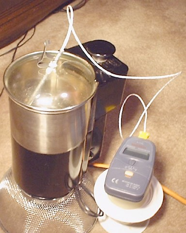

This model uses the editor of ODEs of Ejs to simulate the cooling of a cup of coffe in an environment with changing temperature. The data from the simulation is compared to real data obtained from an experiment.
The black line (which gradually turns blue) corresponds to the outside (room) temperature, the red line is the temperature of an insolated cup, and the pink line is the temperature of a regular cup. Finally, the blue line is the temperature predicted by the model.
